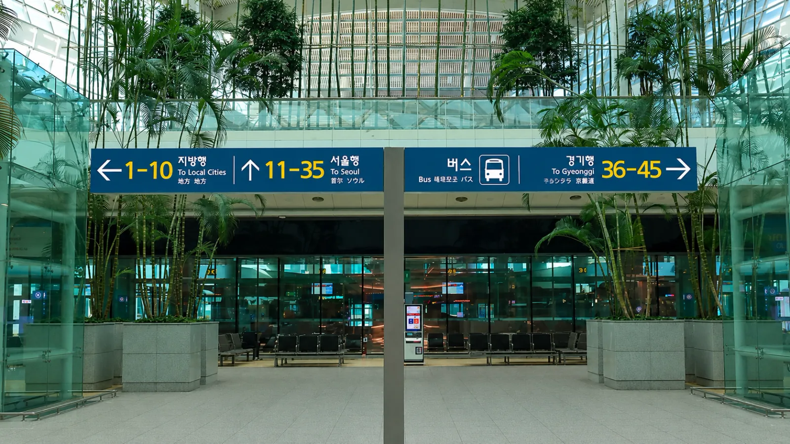
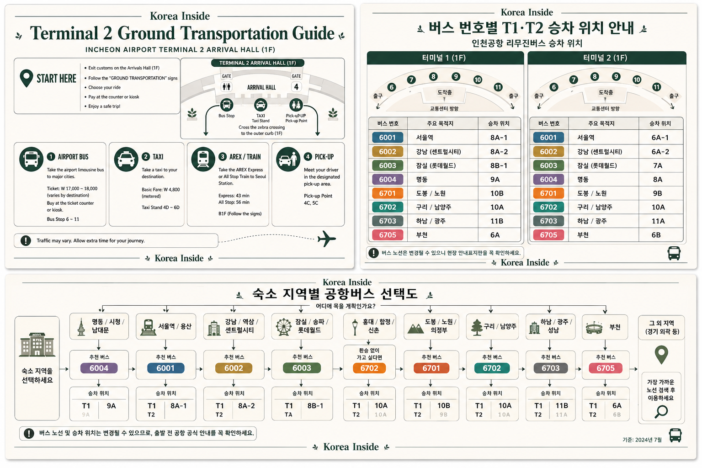
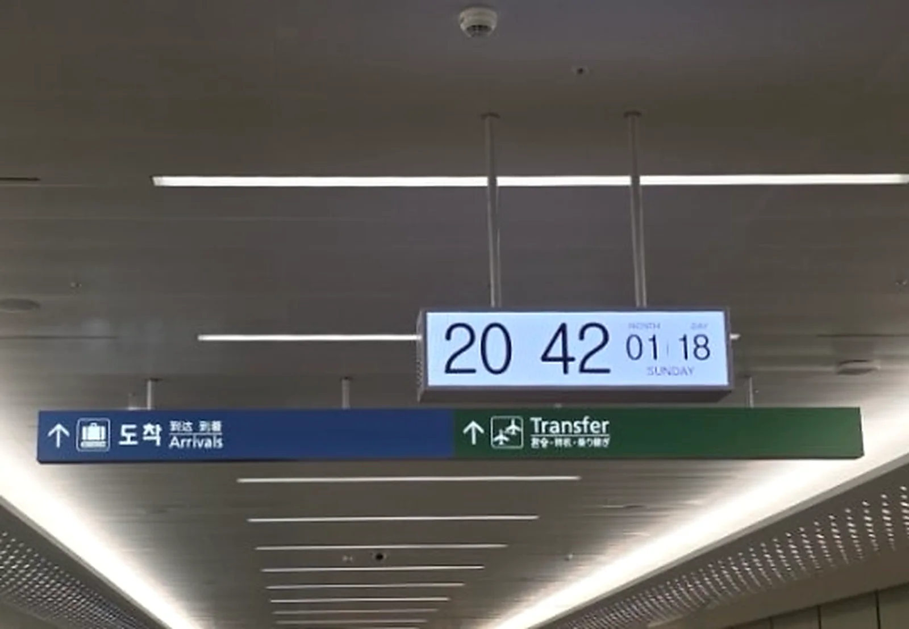
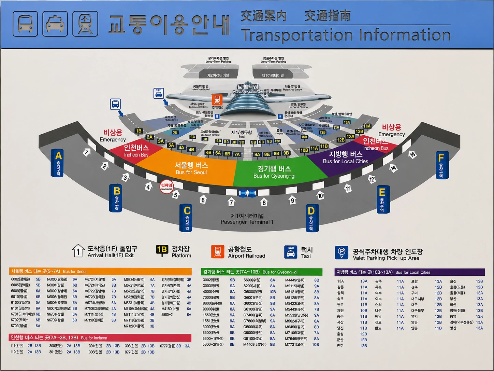
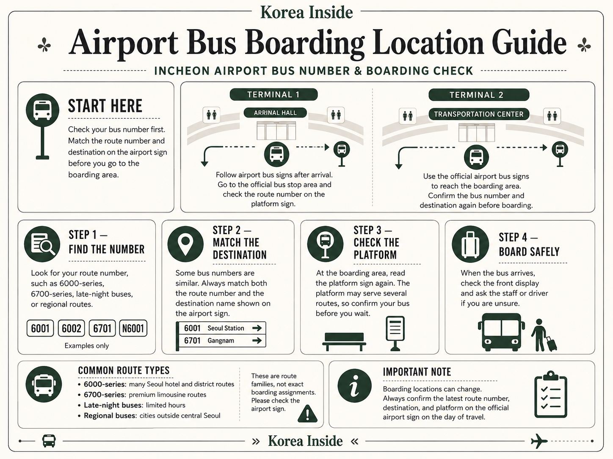
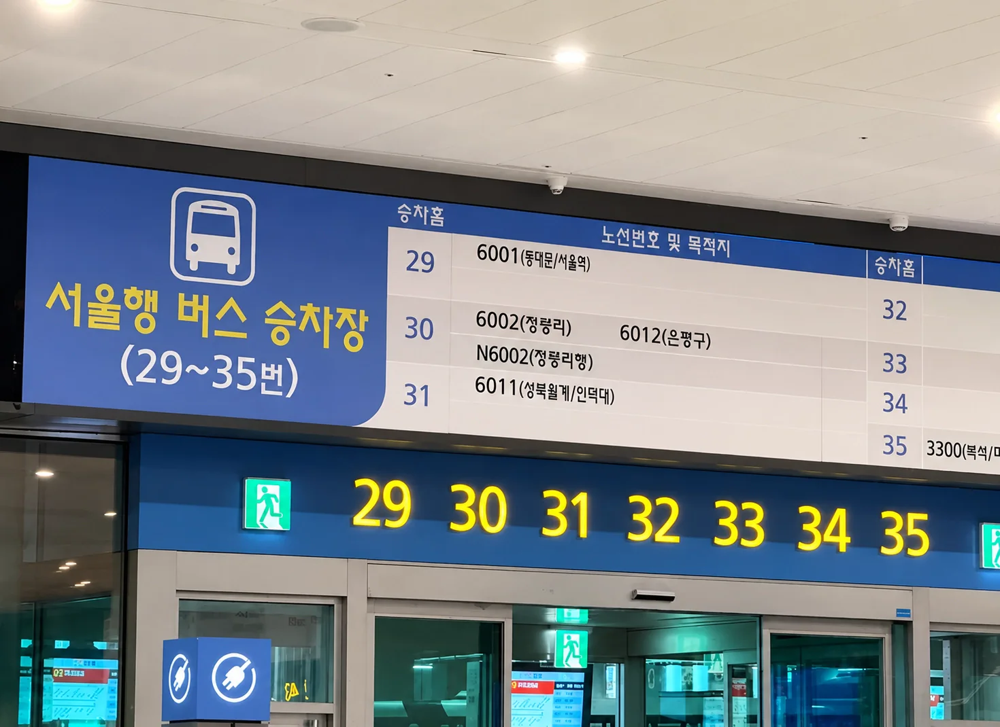
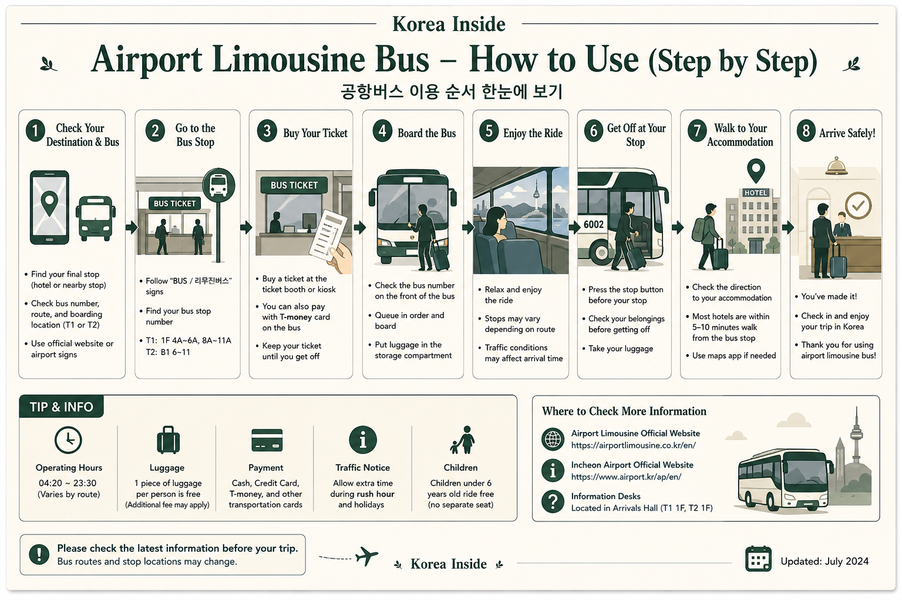

Besonders sinnvoll ist der Bus, wenn eine Haltestelle in gut zu bewältigender Laufweite deines Hotels liegt. Für Hongdae, Seoul Station oder eine andere Adresse mit einfacher Bahnverbindung kann AREX trotzdem leichter sein. Außerhalb Seouls solltest du nach der tatsächlichen Stadt oder dem Terminal suchen, statt mit einer Seoul-Limousinenroute zu beginnen.

Beginne mit der Haltestelle, nicht mit der Busnummer
Die einfachste Flughafenbus-Fahrt beginnt beim Hotel, nicht am Flughafen. Suche deine Unterkunft zuerst in einer koreanischen Karten-App und prüfe dann, welche Bushaltestellen einen vernünftigen letzten Fußweg lassen.
Eine 300 Meter entfernte Haltestelle an einer ebenen Straße kann hervorragend sein. Eine etwas nähere Haltestelle auf der anderen Seite einer breiten Kreuzung, bergauf oder mehrere Ebenen unterhalb des Hotels kann mit zwei Koffern deutlich unangenehmer sein.
Das gilt besonders in großen Vierteln wie Myeongdong, Jongno, Dongdaemun, Gangnam und Hongdae. Zwei Hotels im selben Viertel können eine völlig unterschiedliche Flughafenbus-Anbindung haben.
Seoul
Für ein Hotel in Seoul ist eine Flughafenlimousine dann besonders attraktiv, wenn die Haltestelle wirklich nahe an der Unterkunft liegt.
Der größte Vorteil ist nicht unbedingt die Geschwindigkeit. Es ist vielmehr, die Abfolge aus Flughafenstation, Zug, Umsteigestation, U-Bahn-Ausgang und letztem Fußweg mit Gepäck zu vermeiden.
Der Nachteil ist der Verkehr. Bei vollen Straßen kann ein Bus länger dauern als die Bahn, sodass eine Adresse mit einfacher AREX-Verbindung trotzdem besser passen kann.
Wenn du dein Viertel in Seoul noch auswählst, ist eine direkte AREX-Station nicht automatisch einfacher als eine Flughafenbus-Haltestelle nahe dem Hotel. Vergleiche für Hongdae, Gongdeok, Seoul Station und Myeongdong die gesamte Anreise, bevor du dich für das Viertel entscheidest.
Incheon und Gyeonggi
Ziele außerhalb des Zentrums von Seoul werden von anderen Busnetzen bedient.
Wer nach Suwon, Seongnam, Goyang, Bucheon oder zu einem anderen Ziel in Gyeonggi fährt, sollte direkt nach diesem Ziel suchen, statt zu versuchen, eine Seoul-Flughafenbusroute dafür anzupassen.
Routennummern, Betreiber, Ticketregeln und Haltestellen unterscheiden sich. Auch die Nachtverbindungen in Gyeonggi werden getrennt von den Seoul-Verbindungen veröffentlicht.
Andere koreanische Städte
Wenn der Flughafen nur der Beginn einer längeren Reise ist, kann ein Intercity-Bus die zusätzliche Fahrt ins Zentrum Seouls ersparen.
Suche nach der konkreten Stadt und dem Namen des Terminals. Große Städte können mehrere Busterminals haben; wenn du auf der falschen Seite der Stadt ankommst, ist ein großer Teil des Vorteils der direkten Flughafenverbindung wieder verloren.
BusTago bietet Online-Reservierungsinformationen für teilnehmende Intercity-Terminals, aber nicht jede Verbindung unterstützt eine Internetbuchung.
Spät in der Nacht
Ein Nachtbus ist nicht einfach dieselbe Tagesroute, die nur länger fährt.
Der Flughafen Incheon veröffentlicht getrennte Nachtbus-Informationen für Terminal 1 und Terminal 2 und unterscheidet außerdem zwischen Seoul- und Gyeonggi-Verbindungen. Beginne mit dem Terminal, an dem dein Flug tatsächlich landet, und prüfe dann, wo die Nachtverbindung endet.
Ein Bus, der technisch um 1 Uhr nachts fährt, hilft wenig, wenn seine Endhaltestelle dich mit Gepäck weit vom Hotel entfernt absetzt.
Der kostenlose Flughafen-Shuttle
Der Flughafen-Shuttle ist wiederum etwas anderes.
Er befördert Passagiere zwischen den Terminals und Einrichtungen im Flughafengebiet. Er ist keine kostenlose Verbindung nach Seoul oder Gyeonggi.
Wann der Bus nicht die naheliegende Wahl ist
Ein Bus ist nicht automatisch besser, nur weil er direkt fährt. Wenn die nächstgelegene Haltestelle trotzdem einen schwierigen Fußweg bedeutet, kann AREX für ein Hotel mit guter Bahnanbindung einfacher sein. Ein Taxi ist sinnvoller, wenn Tür-zu-Tür-Komfort wichtiger ist als der Preis. Ein vorab gebuchtes Fahrzeug kann für größere Gruppen oder ungewöhnliches Gepäck praktisch sein. Die vollständigen Abwägungen findest du im Guide zum Flughafentransfer ab Incheon.
Finde eine Route, die auch nach dem Aussteigen noch funktioniert
Sobald du den Hotel-Pin hast, wird die Routensuche deutlich einfacher. Die offizielle Flughafensuche zeigt, welche Busse die Gegend bedienen; auf der Betreiberseite findest du die Details, die sich von Unternehmen zu Unternehmen ändern können.
- Speichere das Hotel auf KoreanischHalte den koreanischen Ortsnamen, die koreanische Straßenadresse und die Telefonnummer auf deinem Handy bereit. Ein Karten-Pin ist sogar nützlicher als nur der Viertelname.
- Prüfe den letzten Teil der StreckeVergleiche die möglichen Haltestellen mit dem Hoteleingang, nicht nur mit dem Mittelpunkt des Viertels. Hügel, Unterführungen und breite Kreuzungen sind mit Gepäck relevant.
- Nutze die Bussuche des Flughafens IncheonSuche nach dem Ziel und identifiziere Route, Haltestelle und Betreiber. Der Flughafen trennt Verbindungen nach Seoul, Gyeonggi und Intercity-Verbindungen, statt sie als ein System zu behandeln.
- Öffne anschließend die Seite des BetreibersFahrpläne, Preise, Ticketverkauf und Gepäckregeln können selbst bei Bussen in ähnliche Teile Seouls unterschiedlich sein.
- Ordne die Route T1 oder T2 zuDein Flugterminal entscheidet darüber, wo du das Ticket kaufst, wo du einsteigst und teilweise auch über die Abfahrtszeit.
- Plane Zeit für den Flughafen selbst einDer Flughafen Incheon empfiehlt Passagieren bei der Buchung öffentlicher Verkehrsmittel, nach der Flugankunft ungefähr 1–2 Stunden für die Einreise einzuplanen. Gepäckausgabe und Zoll bringen zusätzliche Unsicherheit. Für eine sehr knappe Verbindung zum letzten Bus brauchst du deshalb einen Plan B.

Offizielle Betreiber von Flughafenbussen nach Seoul
Die Flughafenbusse nach Seoul werden nicht von einem einzigen Unternehmen betrieben. Sobald du deine Route kennst, sagt dir der Betreibername, wo du die tatsächlich geltenden Regeln prüfen musst.
Airport Limousine Co.
Viele Flughafenrouten nach Seoul werden von Airport Limousine Co. betrieben. Die Website veröffentlicht Routen, Fahrpläne, Preise, Gepäckhinweise und Ticketinformationen.
K Airport Limousine
K Airport Limousine betreibt ein eigenes Routennetz und veröffentlicht Haltestellensuche, Fahrpläne, Preise, Ticketinformationen und Bus-Tracking.
Seoul Airport Limousine
Dies ist ein weiterer eigenständiger Betreiber in Seoul, unter anderem mit Routen in Teile von Gangnam und in den Südosten Seouls. Das Unternehmen veröffentlicht eigene Fahrpläne und Betriebsinformationen.
CALT
CALT betreibt eigene Flughafenlimousinen, darunter die Verbindung in die COEX-Gegend, mit separaten Routen- und Fahrplaninformationen.
Der Unternehmensname ist keine unwichtige Verwaltungsangabe. Er entscheidet darüber, welche Preis-, Gepäck- und Ticketregeln für deinen Bus gelten.
Ticketkauf und Einstieg an T1 oder T2
Sobald du in der öffentlichen Ankunftshalle bist, ist der größte Teil der Planung bereits erledigt. Jetzt musst du nur noch die gespeicherte Route dem richtigen Ticketschalter und Einstiegsbereich zuordnen.

Terminal 1
Am Terminal 1 befindet sich der Ticketverkauf für Busse auf der Ankunftsebene.
Der Flughafen führt derzeit Ticketschalter innerhalb des Terminals nahe den Ausgängen 4 und 9 sowie zusätzliche Schalter draußen rund um die Ausgänge 4, 6, 7, 8, 11 und 13 auf. Nutze diese Orte zur Orientierung, folge aber den aktuellen Flughafenschildern, falls sich die Aufteilung geändert hat.
Es gibt keinen Grund, sich Wochen vor der Reise einen Bussteig zu merken. Kaufe oder prüfe zuerst das Ticket und folge dann der aktuellen Anzeige zum Einstiegsplatz.

Terminal 2
Am Terminal 2 werden Busse über das B1 Bus Terminal im Transportation Center abgewickelt.
Dorthin verweist der Flughafen derzeit für Businformationen und Ticketkäufe.


Eine T2-Regel, die 2026 wichtig ist
Gehe nicht davon aus, dass du bei jedem Flughafenbus nach Seoul einfach einsteigen und eine Verkehrskarte ans Lesegerät halten kannst.
Airport Limousine Co. änderte das Verfahren am T2 im März 2026: Wer mit den Bussen dieses Unternehmens nach Seoul fährt, muss vor dem Einstieg am bedienten Schalter oder Ticketautomaten auf B1 ein Ticket kaufen. Auch K Airport Limousine weist Passagiere ab dem Flughafen Incheon an, vorab am Schalter oder Automaten ein Reservierungsticket zu kaufen.
Genau deshalb darf die Zahlungsinformation eines Flughafenbusunternehmens nicht automatisch auf ein anderes übertragen werden.
Von der Ankunftshalle bis zum Sitzplatz
- Betritt nach Einreise, Gepäckausgabe und Zoll die öffentliche Ankunftshalle.
- Gehe zum Ticketbereich deines Terminals und zeige das gespeicherte Ziel, falls die Route unklar ist.
- Lies das Ticket, bevor du den Schalter verlässt. Zielhaltestelle und Terminal sind wichtiger als eine auswendig gelernte Routennummer.
- Folge der aktuellen Anzeige zum Bussteig. Wenn ein alter Screenshot etwas anderes zeigt als die Flughafenanzeige, gilt die Flughafenanzeige.
- Zeige das Ziel, bevor dein Koffer im Gepäckraum verstaut wird. Bewahre einen eventuellen Gepäckbeleg auf, bis du dein Gepäck wieder in der Hand hast.
- Lass den Hotel-Pin während der Fahrt geöffnet. Anzeigen und Ansagen im Bus helfen, aber die eigene Position auf der Karte macht eine unbekannte Haltestelle leichter erkennbar.

Bezahlen ist eine Betreiberregel, keine flughafenweite Regel
Für die Busse ab Flughafen Incheon gibt es keine einheitliche Zahlungsregel.
K Airport Limousine veröffentlicht zum Beispiel Unterstützung für Kreditkarten, Verkehrskarten und T-money, verlangt bei Abfahrten ab Flughafen Incheon aber zugleich Reservierungstickets. Airport Limousine Co. hat wiederum ein eigenes Ticketverfahren am Flughafen.
Wer auf einer Route erfolgreich mit T-money bezahlt hat, sollte deshalb nicht annehmen, dass das am nächsten Schalter genauso funktioniert.
Eine zweite Zahlungskarte und etwas koreanisches Bargeld sind weiterhin sinnvolle Reserven für den Ankunftstag. Die endgültige Antwort gibt der Ticketautomat oder bediente Schalter der konkreten Route.
Gepäck, Familien und späte Ankünfte
Gepäck
Der Gepäckraum ist einer der besten Gründe für einen Flughafenbus. Gleichzeitig entstehen hier leicht falsche Annahmen.
Es gibt keine einheitliche Gepäckfreigrenze für alle Busse am Flughafen Incheon.
Airport Limousine Co. veröffentlicht derzeit eine Freigrenze von bis zu zwei Gepäckstücken, wenn jedes Stück unter 28 Zoll und 20 kg liegt. K Airport Limousine veröffentlicht eine andere Freigrenze: zwei Gepäckstücke mit einem Gesamtgewicht von bis zu 40 kg pro zahlendem Passagier.
Das sind Beispiele für Betreiberregeln, kein Standard für jeden Flughafenbus.
Pass, Medikamente, Elektronik und andere Wertsachen solltest du bei dir behalten. Wenn ein Koffer im Gepäckraum verstaut wird, behalte den zugehörigen Gepäckbeleg, bis du den Koffer zurückbekommst.
Kinder, Kinderwagen und Gruppen
Für eine Familie kann der Bus deutlich einfacher sein als die Bahn, wenn die Haltestelle direkt am Hotel liegt.
Die Rechnung ändert sich, wenn Kinderwagen, mehrere Koffer oder ein müdes Kind nach dem Aussteigen noch weitere 800 Meter bewältigen müssen.
Kinderpreise, Regeln für eigene Sitzplätze und die Mitnahme von Kinderwagen legt ebenfalls der Betreiber fest – nicht „die Flughafenbusse von Incheon“ als Ganzes.
Für Familien oder Gruppen solltest du die komplette Strecke nach dem Aussteigen mit Preis und Fahrzeugkapazität eines Taxis oder vorab gebuchten Transfers vergleichen.
Späte Ankünfte
Rechne mit dem Zeitpunkt, an dem du die öffentliche Halle erreichen kannst – nicht mit der Landezeit des Flugzeugs.
Einreise, Gepäckausgabe und Zoll liegen dazwischen. Der Flughafen Incheon weist selbst darauf hin, diese Zeit bei der Buchung öffentlicher Verkehrsmittel einzuplanen.
Prüfe anschließend die aktuelle Nachtbus-Seite für dein Terminal und dein Zielgebiet. Seoul und Gyeonggi werden getrennt aufgeführt, und T1 und T2 haben nicht denselben Fahrplan.
Wenn der verbleibende Bus dich weit vom Hotel entfernt absetzt, kann ein offizielles Flughafentaxi spät in der Nacht die praktischere Wahl sein.
Wenn etwas schiefgeht
Die Karte funktioniert nicht
Eine abgelehnte Karte bedeutet nicht automatisch, dass du den Bus nicht nutzen kannst. Frage am bedienten Schalter, welche Zahlungsmittel für diese Route akzeptiert werden, bevor du dieselbe Karte immer wieder versuchst. Lässt sich der Bus mit deinen verfügbaren Zahlungsmitteln nicht buchen, vergleiche eine andere bestätigte Route oder den offiziellen Taxistand.
Das Ticket ist falsch
Wenn Ziel, Terminal oder Abfahrt falsch sind, gehe vor dem Einstieg zurück zum Verkäufer. Zeige die Adresse der Unterkunft und frage, ob das Ticket nach den Regeln dieses Betreibers geändert oder erstattet werden kann.
Der Bus ist schon weg
Prüfe die nächste Abfahrt, bevor du die Route aufgibst. 20 Minuten Wartezeit können immer noch leichter sein, als das Gepäck zur Bahn zu bewegen; bei deutlich längerer Wartezeit können AREX oder Taxi sinnvoller werden.
Der Bussteig ist nicht dort, wo ihn ein alter Guide zeigt
Nutze die aktuelle Flughafenanzeige. Bussteige und Routenzuordnungen können sich ändern. Ein Monate alter Screenshot sollte deshalb nie die Terminalbeschilderung überstimmen.
Du hast nach dem falschen Terminal gesucht
T1 und T2 haben unterschiedliche Busbereiche. Prüfe das Terminal in den Fluginformationen, bevor du Ticket- oder Einstiegsanweisungen des anderen Terminals folgst.
Die Bushaltestelle ist weiter vom Hotel entfernt als erwartet
Öffne den Fußweg, bevor du aussteigst. Ein kurzes Taxi ab der Haltestelle kann einen schwierigen letzten Fußweg ersparen. Wenn das Problem jedoch schon vor dem Verlassen des Flughafens offensichtlich ist, kann von Anfang an ein anderes Verkehrsmittel einfacher sein.
Der letzte brauchbare Bus ist weg
Prüfe die terminalspezifischen Nachtbus-Informationen noch einmal. Wenn keine Verbindung an einer praktikablen Haltestelle endet, nutze den offiziellen Flughafentaxistand oder einen bestätigten vorab gebuchten Pickup, statt ein unaufgefordertes Fahrangebot im Terminal anzunehmen.
Der Gepäckbeleg fehlt
Informiere den Fahrer oder das Buspersonal, bevor du die Haltestelle verlässt. Halte Ticket, Routennummer, Fahrzeit und eine Beschreibung des Koffers bereit, während geprüft wird, wem der Koffer gehört.
Rückfahrt zum Flughafen Incheon
Die Haltestelle, an der du in Seoul angekommen bist, ist nicht automatisch dieselbe Haltestelle für die Rückfahrt zum Flughafen.
Flughafenwärts gelegene Haltestellen können auf der anderen Seite einer breiten Straße oder an einem völlig anderen Ort liegen. Suche die Rückfahrthaltestelle vor dem Abreisetag, speichere den koreanischen Namen und den Karten-Pin und prüfe den Zugang auf Straßenebene mit Gepäck.
- Suche die Haltestelle Richtung Flughafen separat.Drehe die Ankunftsroute nicht einfach gedanklich um.
- Prüfe das Terminal deiner Airline.Kläre, ob du T1 oder T2 brauchst und ob der Bus beide Terminals bedient.
- Prüfe den aktuellen Fahrplan am Tag vor der Abreise.Bei frühen Flügen ist besondere Vorsicht nötig.
- Plane mehr Puffer als die reine Fahrzeit ein.Flughafenbusse teilen sich die Straßen mit dem Verkehr in Seoul.
- Kenne die Alternative, bevor du das Hotel verlässt.Wenn der erste Bus, die Haltestelle oder die Reservierung nicht mehr funktioniert, sollte bereits ein AREX- oder Taxi-Plan gespeichert sein.
Bei einem frühen Flug ist die erste flughafenwärts fahrende Verbindung wichtiger als eine Route, die tagsüber bequem aussah. Wenn der Fahrplan wenig Puffer für den Airline-Check-in lässt, ist eine frühere Bahn- oder Taxifahrt die sicherere Entscheidung.
Vor dem Verlassen des Hotels
- Haltestelle Richtung Flughafen auf Koreanisch gespeichert
- T1 oder T2 bestätigt
- Aktuelle Abfahrtszeit geprüft
- Ticket oder Zahlungsmethode verstanden
- Gepäckweg zur Haltestelle geprüft
- AREX- oder Taxi-Alternative gespeichert
Häufige Fragen zum Flughafenbus
Was ist der Unterschied zwischen Flughafenbus und Flughafenlimousine?
Am Flughafen Incheon umfasst „Flughafenbus“ mehrere verschiedene Angebote. „Flughafenlimousine“ wird häufig für Reisebusverbindungen verwendet, besonders nach Seoul. Es gibt jedoch weder einen einzigen Limousinenbetreiber noch eine einheitliche Ticketregel. Route und Unternehmen sind wichtiger als die Bezeichnung.
Wie finde ich den richtigen Bus zu meinem Hotel?
Beginne mit dem exakten Hotel-Pin. Suche Bushaltestellen mit einem vernünftigen letzten Fußweg und suche diese Ziele anschließend in der offiziellen Bussuche des Flughafens Incheon. Sobald du eine Route hast, prüfst du auf der Betreiberseite den aktuellen Fahrplan, Preis und die Gepäckregeln.
Werden alle Flughafenbusse nach Seoul von Airport Limousine Co. betrieben?
Nein. Mehrere Unternehmen betreiben Flughafenbusse in Seoul, darunter Airport Limousine Co., K Airport Limousine, Seoul Airport Limousine und CALT. Ihre Routen- und Ticketregeln sind nicht austauschbar.
Wo kann ich am Terminal 1 ein Busticket kaufen?
Der Flughafen Incheon führt derzeit T1-Ticketschalter innerhalb des Terminals nahe den Ausgängen 4 und 9 sowie zusätzliche Außenstellen nahe den Ausgängen 4, 6, 7, 8, 11 und 13 auf. Folge der aktuellen Beschilderung, falls sich die Anordnung geändert hat.
Wo kann ich am Terminal 2 ein Busticket kaufen?
Businformationen und Ticketkäufe werden am B1 Bus Terminal im Transportation Center von Terminal 2 abgewickelt. Einige Betreiber verlangen ein Ticket, bevor du den Bus erreichst. Identifiziere deshalb zuerst das Unternehmen und gehe dann zum Bussteig.
Kann ich T-money oder eine ausländische Kreditkarte verwenden?
Darauf gibt es keine flughafenweit einheitliche Antwort. Einige Betreiber akzeptieren Verkehrskarten oder Kreditkarten, während bei bestimmten Abfahrten vom Flughafen ein Ticket vom Schalter oder Automaten erforderlich ist. Nutze die Regel des tatsächlichen Betreibers, statt von einer Busfahrt auf die nächste zu schließen.
Wie viel Gepäck darf ich mitnehmen?
Die Gepäckregeln legt das Busunternehmen fest. Selbst große Seoul-Betreiber veröffentlichen unterschiedliche Freigrenzen. Prüfe deshalb den Betreiber deiner Route, wenn du mehrere große Koffer, Sportausrüstung oder anderes Sperrgepäck dabeihast.
Was soll ich nach einer späten Ankunft tun?
Nutze die offizielle Nachtbus-Seite des Terminals, an dem dein Flug landet, und unterscheide anschließend zwischen Seoul- und Gyeonggi-Verbindungen. Wenn kein Bus an einem praktikablen Ziel endet, nutze den offiziellen Taxistand oder einen bestätigten vorab gebuchten Pickup.
Gibt es Busse vom Flughafen Incheon in Städte außerhalb Seouls?
Ja. Verbindungen nach Incheon, Gyeonggi und Intercity-Busse verbinden den Flughafen mit vielen weiteren Zielen. Suche nach der konkreten Stadt oder dem Busterminal und bestätige anschließend Betreiber und Reservierungsmethode.
Wie fahre ich mit dem Bus zurück zum Flughafen Incheon?
Suche die flughafenwärts gelegene Haltestelle separat, prüfe, ob der Bus T1 oder T2 bedient, und kontrolliere den Fahrplan vor der Abreise erneut. Plane zusätzlichen Puffer für Straßenverkehr ein und halte eine alternative Flughafenroute bereit, wenn der Bus zeitlich zu knapp ist.
Offizielle Quellen
- Öffentliche Businformationen Terminal 1 — Flughafen Incheon
- Bus-Terminal-Informationen Terminal 2 — Flughafen Incheon
- Offizielle Bussuche — Flughafen Incheon
- Nachtbusse nach Seoul — Terminal 1
- Nachtbusse nach Seoul — Terminal 2
- Nachtbusse nach Gyeonggi — Terminal 1
- Nachtbusse nach Gyeonggi — Terminal 2
- Airport Limousine Co.
- K Airport Limousine
- Seoul Airport Limousine
- CALT City Airport Limousine
- Gyeonggi Bus Information
- BusTago